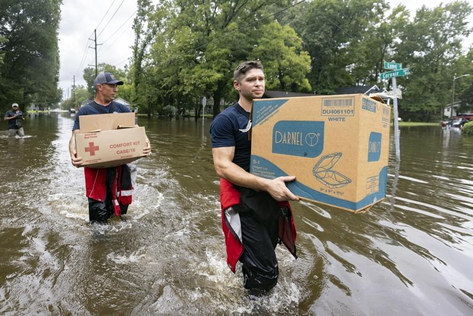

热带风暴黛比(Debby)侵袭佛州后速度减缓，6日为东南部带来多达25吋的豪雨、暴洪、龙卷风，交通事故和倒下的树木造成至少五人死亡，未来几天预计会转进大西洋，再回访东岸，预期会再度打破降雨纪录。
黛比虽然低速前进，国家飓风中心预测，将替南部历史古都如乔治亚州的沙瓦纳(Savannah)和南卡的查尔斯顿(Charleston)等地带来最多25吋的降雨。
沙瓦纳市内一些地区6日有人在深及腰间的马路上行走，市长强生(Van Johnson)拍了一段影片上传社交媒体，说市民需要哪些资源，市府都可提供。「水势严重，别以为这只是一阵暴风雨。」
飓风中心说，6日下午5点，风暴中心在沙瓦纳东南10哩，沿着乔治亚州太比岛(Tybee Island)以每小时5哩的速度，朝东北东方向移动。
该中心专家帕许(Richard Pasch)说，热带气旋向来都会带来豪雨，不过它一路前进，不会在某一地点累积太大的雨量，「可是速度迟缓，那是最糟的情况。」
帕许说，热带龙卷风的能量来自温暖的水，因此黛比在陆地的时候力道减弱，不过它旋转的范围包括大西洋面的海水，因此7日的风暴中心点可能加强它的能量，8日登上内陆的南卡州时，降雨量不可小觑。
国家气象局说，沙瓦纳5日降雨就有6.68吋(17公分)，几乎一整个月的雨量一天就下完。2023年8月，该市的降雨量不过5.56吋(14.1公分)。
沙瓦纳和查尔斯顿等已发布洪水警报，这两个都市5日雨势加大时，各自宣布宵禁。两地之间的奇雅瓦岛(Kiawah Island )和艾迪斯托岛 (Edisto Island )上的树木都被龙卷风吹倒，压坏了好几家住户。沃尔玛、苹果峰等商家遭到损坏，离查尔斯顿30哩的孟克斯角(Moncks...
四名友人6日在淹水的查尔斯顿街道划船。(美联社) 热带风暴黛比(Debby)侵袭佛州后速度减缓，6日为东南部带来多达25吋的豪雨、暴洪、龙卷风 ，交通事故和倒下的树木造成至少五人死亡，未来几天预计会转进大西洋，再回访东岸，预期会再度打破降雨纪录。
黛比虽然低速前进，国家飓风中心预测，将替南部历史古都如乔治亚州 的沙瓦纳(Savannah)和南卡 的查尔斯顿(Charleston)等地带来最多25吋的降雨。
沙瓦纳市内一些地区6日有人在深及腰间的马路上行走，市长强生(Van Johnson)拍了一段影片上传社交媒体，说市民需要哪些资源，市府都可提供。「水势严重，别以为这只是一阵暴风雨。」
飓风中心说，6日下午5点，风暴中心在沙瓦纳东南10哩，沿着乔治亚州太比岛(Tybee Island)以每小时5哩的速度，朝东北东方向移动。
该中心专家帕许(Richard Pasch)说，热带气旋向来都会带来豪雨，不过它一路前进，不会在某一地点累积太大的雨量，「可是速度迟缓，那是最糟的情况。」
帕许说，热带龙卷风的能量来自温暖的水，因此黛比在陆地的时候力道减弱，不过它旋转的范围包括大西洋面的海水，因此7日的风暴中心点可能加强它的能量，8日登上内陆的南卡州时，降雨量不可小觑。
国家气象局说，沙瓦纳5日降雨就有6.68吋(17公分)，几乎一整个月的雨量一天就下完。2023年8月，该市的降雨量不过5.56吋(14.1公分)。
沙瓦纳和查尔斯顿等已发布洪水警报，这两个都市5日雨势加大时，各自宣布宵禁。两地之间的奇雅瓦岛(Kiawah Island )和艾迪斯托岛 (Edisto Island )上的树木都被龙卷风吹倒，压坏了好几家住户。沃尔玛、苹果峰等商家遭到损坏，离查尔斯顿30哩的孟克斯角(Moncks Corner)好几辆车被吹翻。

沙瓦纳两名消防员涉水为民众送食物。（美联社）